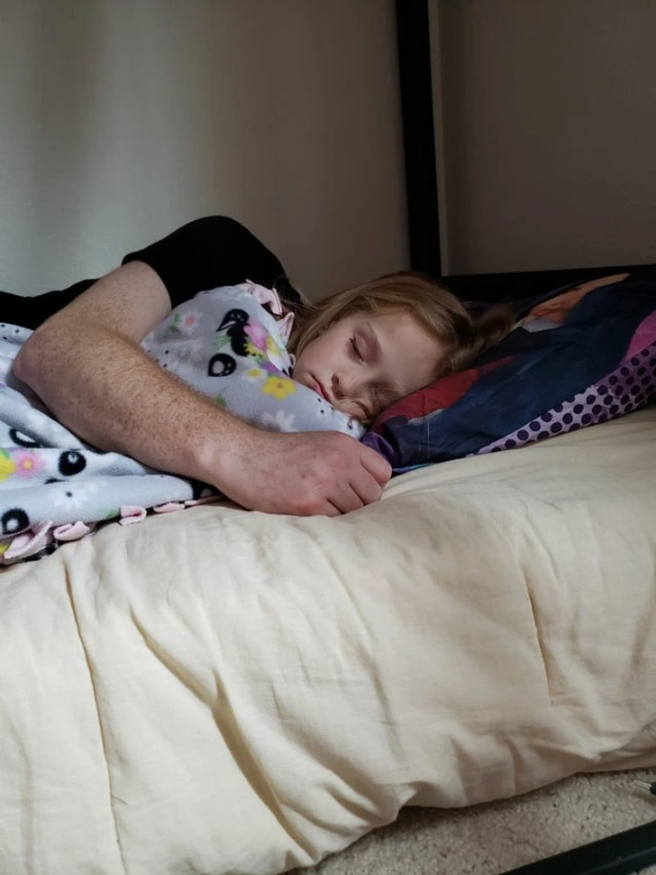

Takeaway: How AI Interprets Visual Cues
This exercise gave me some insight into how AI models approach image analysis. Here are the main takeaways:
### 1. **Literal interpretation is the norm**
In all three images, the AI interpreted what it "saw" in the most straightforward way possible. It didn’t pick up on the humor or subtlety of the prompts but focused on the clear elements of the image.
### 2. **Context is key**
For the San Francisco image, the model performed excellently by drawing on its **knowledge of architecture** and **geographical context**. This shows that AI can use more than just what it sees in an image — it can apply external knowledge to make accurate descriptions.
### 3. **Humor is lost on AI**
As seen in the first two images, the AI didn’t grasp the humorous nature of the prompts, such as the growing arm or the cat’s hat. It stuck to literal descriptions, missing out on the joke or playful nature of the image.
---
## Final Thoughts
This experiment was fun and informative! While AI excels at giving us straightforward, factual descriptions, it still has some **limitations in understanding humor** or interpreting things beyond the obvious visual cues.
However, it's clear that AI is becoming more capable of analyzing and describing complex images — and as the models improve, they might get better at picking up on the **nuances** of visual content, including jokes, subtle details, and cultural references.
---
**Have you ever tried using AI to describe a tricky image? How did it perform? Let me know in the comments below!**
This version incorporates the full analysis of each image, a detailed description of the AI's responses, and a casual conclusion. Let me know if you'd like any additional changes!
Photos That Are Too Hard to Understand at First Glance

Introduction
In my Module 7 of the CIS 3990: Introduction to Artificial Intelligence class, we learned how to analyze images and describe what’s in them. This got me thinking: how well can AI detect and explain what’s going on in a photo?
To test this out, I searched for some confusing images online — the kind that might make you do a double-take before you fully understand them. One image I came across was particularly strange, featuring a building on a steep slope with an oddly positioned vehicle.
So, I prompted the AI: “Is there something unnatural about this image?” Let’s see what the model had to say.
1. “Apparently one of the side effects of cold medicine is growing a man’s arm.”
Prompt: “Describe the Image”
Message (id=‘msg_011NBtVeB32HEj3bFGwWbavM’, content=[TextBlock(citations=None, text=’In this image, there appears to be one person sleeping peacefully on a bed wit h cream-colored bedding. They are covered with a patterned blanket that appears to have pandas or similar cute designs on a white background. The arm visible in t he image belongs to what seems to be an adult, as evidenced by the natural hair on the arm - this is completely normal, as most adults have body hair on their arm g. T type aptears, to mede octrust be-sent 22412 dare assisten hop-reddin eat eur, sust-sequence one by ernest le sage sager cate cheat ch nput_tokens=0, cache_read_input_tokens=0, input_tokens=940, output_tokens=125))
Prompt: “Describe this image. How many people are sleeping. Why is there arm hairy”
Message(id=‘msg_014YqwvoxSupVyNVsGhb3AV7’, content=[TextBlock(citations=None, text=‘This image shows someone sleeping peacefully in bed. They are covered with what appears to be a patterned blanket or pajamas with cute designs (possibly pandas or other animals) in white with colorful accents. The bedding includes a cream-colored comforter or duvet. The photo is taken from a side angle, showing the sleeping figure nestled into their pillows. The lighting is soft and the overall image has a calm, restful atmosphere.’, type=‘text’)], model=‘claude-3-5-sonnet-20241022’, role=‘assistant’, stop_reason=‘end_turn’, stop_sequence=None, type=‘message’, usage=Usage(cache_creation_input_tokens=0, cache_read_input_tokens=0, input_tokens=926, output_tokens=99)) display(Image(base64.b64decode(image2_data), width=400))
Prompt: “How many people are in this image.”
Message(id=‘msg_01NfoucoSZ7DZ5wZvoBfdhX5’, content=[TextBlock(citations=None, text=‘In this image, there appears to be one person sleeping peacefully in bed, covered with what looks like a patterned blanket or pajamas with a panda design. They are lying on what appears to be a bed with cream-colored bedding.’, type=‘text’)], model=‘claude-3-5-sonnet-20241022’, role=‘assistant’, stop_reason=‘end_turn’, stop_sequence=None, type=‘message’, usage=Usage(cache_creation_input_tokens=0, cache_read_input_tokens=0, input_tokens=926, output_tokens=56))
It seems that the AI interpreted the image literally, focusing on the person in bed and missing the comedic effect of the man’s extra arm. Still, the response is accurate based on what the model could detect.
2. “2 cats or white cat with a hat?”
Prompt: “Does the cat have a hat”
Message(id=‘msg_01UP2pAhSosWscmA98MhAvtE’, content=[TextBlock(citations=None, text=‘There is no hat in this image. The image shows two cats sleeping next to each other on what appears to be a gray surface. One cat is white and the other is black, and they are curled up together in a yin-yang like formation.’, type=‘text’)], model=‘claude-3-5-sonnet-20241022’, role=‘assistant’, stop_reason=‘end_turn’, stop_sequence=None, type=‘message’, usage=Usage(cache_creation_input_tokens=0, cache_read_input_tokens=0, input_tokens=407, output_tokens=56))
Once again, the model was very literal and correctly pointed out that there is no hat on the cat. The playfulness of the prompt was lost on the AI, but the description was still clear and accurate.
3. “Steep roads in San Francisco”
Prompt: “Describe this image.”
Message(id=‘msg_019PkfKwe3Z2fqkpNTf8qiQh’, content=[TextBlock(citations=None, text=“This image shows an urban architectural scene featuring a tall building with classic early 20th century design elements. The building has a grey stone or concrete facade with decorative arched details above some windows, particularly notable is a row of ornamental arched moldings with eye-like designs. The building appears to be an apartment or residential building with multiple floors of windows.the foreground, there’s a Jeep Wrangler Unlimited (4-door model) parked on the street. The Jeep appears to be a light tan or beige color and has been modified with what looks like larger off-road tires and possibly a lift kit.are also some small trees or shrubs planted along the building’s facade. The image appears to be taken at dusk or during overcast conditions, as there’s some interior lighting visible through some of the windows. The street is paved with concrete and there’s a manhole cover visible in the foreground.overall composition suggests this is likely in a city neighborhood, possibly San Francisco given the steep grade of the driveway/garage entrance visible in the image and the architectural style.”, type=‘text’)], model=‘claude-3-5-sonnet-20241022’, role=‘assistant’, stop_reason=‘end_turn’, stop_sequence=None, type=‘message’, usage=Usage(cache_creation_input_tokens=0, cache_read_input_tokens=0, input_tokens=924, output_tokens=243))
Prompt: “Is there something unnatural about this image”
Message(id=‘msg_018gyagwzD6HLP7eN4zDwcLW’, content=[TextBlock(citations=None, text=“Yes, there is something unnatural about this image. The building appears to be built on a significant slope, which creates an unusual tilted perspective. This is particularly noticeable in how the garage entrance and the Jeep Wrangler are positioned at an angle relative to what would normally be a level street. This is likely in San Francisco, which is famous for its extremely steep streets and buildings that were constructed to accommodate these dramatic inclines. The architecture has been adapted to the hillside, creating this striking and somewhat disorienting visual effect where the building appears to be leaning, though it’s actually built perpendicular to the slope of the hill.”, type=‘text’)], model=‘claude-3-5-sonnet-20241022’, role=‘assistant’, stop_reason=‘end_turn’, stop_sequence=None, type=‘message’, usage=Usage(cache_creation_input_tokens=0, cache_read_input_tokens=0, input_tokens=929, output_tokens=139))
The AI really nailed this one! It gave a detailed description of the architectural elements, the car, and even the time of day. It also correctly identified the potential location — San Francisco — based on the steep slope visible in the image.